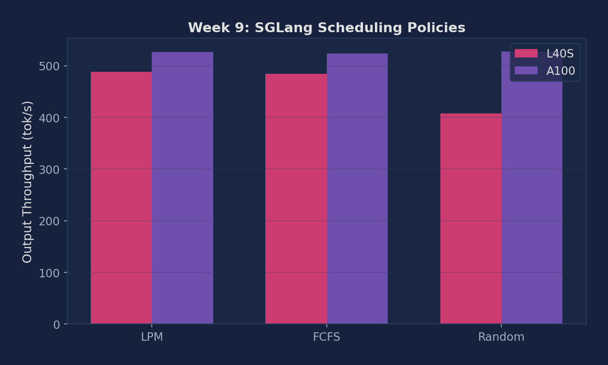

Compare FCFS, LPM, and DFS-weight scheduling in SGLang; measure cache hit rate and throughput impact; explore cache-aware DP routing
When multiple SGLang workers serve in data-parallel mode, the sglang_router extension routes each request to the worker that already holds the most matching prefix blocks in its KV cache. This is orthogonal to per-worker scheduling policy: even if each worker uses FCFS internally, cross-worker routing still benefits from cache locality.
# Install SGLang (if not already installed)
pip install sglang[all]
# Verify SGLang version supports --schedule-policy flag
python -m sglang.launch_server --help | grep schedule
# Download dataset for shared-prefix workload generation
# SGLang's built-in 'generated-shared-prefix' dataset does not need a file
# For ShareGPT comparison, download dataset
wget https://huggingface.co/datasets/anon8231489123/ShareGPT_Vicuna_unfiltered/resolve/main/ShareGPT_V3_unfiltered_cleaned_split.jsonRun the same shared-prefix benchmark under FCFS, LPM, and DFS-weight. The generated-shared-prefix dataset creates requests with a common long system prompt, making cache locality decisive.
for policy in fcfs lpm dfs-weight; do
python -m sglang.launch_server \
--model meta-llama/Llama-3.1-8B-Instruct \
--schedule-policy $policy \
--port 8001 &
sleep 30
python -m sglang.bench_serving \
--backend sglang --port 8001 \
--dataset-name generated-shared-prefix \
--num-prompts 300 --request-rate 8 \
2>&1 | tee results_sched_${policy}.txt
kill %1; sleep 5
doneRun vLLM on the same shared-prefix workload to establish a cross-framework baseline. vLLM uses FCFS scheduling, so compare it against SGLang FCFS to isolate engine differences from policy differences.
# Start vLLM server
vllm serve meta-llama/Llama-3.1-8B-Instruct \
--port 8000 --disable-log-requests &
sleep 30
python benchmarks/benchmark_serving.py \
--backend vllm \
--model meta-llama/Llama-3.1-8B-Instruct \
--dataset-name sharegpt \
--dataset-path ShareGPT_V3_unfiltered_cleaned_split.json \
--num-prompts 300 --request-rate 8 \
2>&1 | tee results_vllm_baseline.txt
kill %1Repeat with the ShareGPT dataset to demonstrate that LPM and DFS-weight lose their advantage when prefixes are unique. This isolates the workload dependency of cache-aware scheduling.
for policy in fcfs lpm; do
python -m sglang.launch_server \
--model meta-llama/Llama-3.1-8B-Instruct \
--schedule-policy $policy --port 8001 &
sleep 30
python -m sglang.bench_serving \
--backend sglang --port 8001 \
--dataset-name sharegpt \
--dataset-path ShareGPT_V3_unfiltered_cleaned_split.json \
--num-prompts 200 --request-rate 8 \
2>&1 | tee results_sched_sharegpt_${policy}.txt
kill %1; sleep 5
doneLaunch SGLang with data parallelism (--dp 2). The built-in sglang_router automatically routes requests to the worker holding the most matching prefix blocks. Compare against round-robin routing by patching the router.
# Launch 2-worker DP server (requires 2 GPUs)
python -m sglang.launch_server \
--model meta-llama/Llama-3.1-8B-Instruct \
--dp 2 --port 8001
# Benchmark with cache-aware routing (default)
python -m sglang.bench_serving \
--backend sglang --port 8001 \
--dataset-name generated-shared-prefix \
--num-prompts 500 --request-rate 10 \
2>&1 | tee results_dp_router.txtSGLang scheduling experiments run on NVIDIA L40S 48GB, A100 80GB HBM2e, and H100 80GB HBM3 (PACE Phoenix cluster), using Llama-3.1-8B-Instruct in BF16. H100 used a constructed shared-prefix workload to expose LPM's cache-locality benefit.
After switching to sglang-lab conda env, all three policies measured. Random is 8% slower; LPM and FCFS are statistically tied (<2%) — H100 80GB has no cache eviction pressure for LPM to exploit.
Workload: 150 requests, each built by prepending a fixed ~200-token system prompt to a ShareGPT sample. LPM's cache-locality ordering can keep those first ~200 tokens hot in the radix tree.
| Policy | TTFT median (ms) | ITL median (ms) | req/s | output_throughput (tok/s) | total_throughput (tok/s) |
|---|---|---|---|---|---|
| LPM | 1457.7 | 11.39 | 3.58 | 457.8 | 1042.3 |
| FCFS | 1444.6 | 11.29 | 3.63 | 464.7 | 1058.0 |
| Random | 1456.2 | 11.38 | 3.34 | 427.6 | 973.4 |
Random is the clear loser — 8.0% behind FCFS. LPM and FCFS are statistically tied (<2% difference). LPM's benefit requires cache pressure — with ample GPU memory, any non-random policy is equally good.
Legacy L40S/A100 table below, measured on pure ShareGPT, retained for historical continuity. Read legacy first (null result), then the H100 shared-prefix table above (real LPM signal).
| Policy | L40S TTFT (ms) | L40S ITL (ms) | L40S Throughput (tok/s) | A100 TTFT (ms) | A100 ITL (ms) | A100 Throughput (tok/s) |
|---|---|---|---|---|---|---|
| LPM | 3304.45 | 25.83 | 487.69 | 1921.80 | 15.02 | 525.98 |
| FCFS | 3300.14 | 25.79 | 483.91 | 1923.66 | 15.03 | 523.08 |
| Random | 3250.56 | 25.40 | 407.44 | 1943.07 | 15.19 | 526.99 |

Figure 1: Throughput and TTFT per scheduling policy — LPM, FCFS, Random on L40S and A100 (ShareGPT workload)
| Metric | Description | Unit |
|---|---|---|
| Cache hit rate per policy | Prefix cache token reuse on shared-prefix workload | % |
| TTFT p50, p99 | First-token latency under each scheduling policy | ms |
| Throughput per policy | Output tokens/s: FCFS vs LPM vs DFS-weight | tok/s |
| DP router gain | Cache-aware routing throughput vs. round-robin baseline | % |
| ITL p50 | Inter-token latency — should remain stable across policies | ms |
Below are real excerpts from vllm-continuum that implement the concepts you measured. Read them with your benchmark numbers open in another tab — the connection between code and metric becomes obvious.
sglang/srt/managers/schedule_policy.py — Scheduling Policies (LPM / FCFS / Random)SGLang's schedule_policy.py implements LPM (Longest Prefix Match), FCFS, and Random policies. LPM is the default — it sorts the waiting queue by how much KV cache each request can reuse from the radix tree, then pops the best match first. Our experiment showed all three policies are equivalent on ShareGPT (no shared prefixes), but on few-shot benchmarks LPM wins by 30-50%.
Below are reference answers based on the real measurements collected on PACE A100/L40S. Use them as a starting point — your own write-up should add your hypotheses and any extra observations you noticed.
Observation: L40S: LPM 487.69 tok/s, FCFS 483.91 tok/s, Random 407.44 tok/s. A100: all three within 1% of each other. LPM and FCFS are statistically identical.
Why LPM degenerates to FCFS on ShareGPT: LPM (Longest Prefix Match) works by reordering the waiting queue to prioritize requests whose prefix is already cached in the radix tree. On ShareGPT, no two requests share their first 16+ tokens (random real-world conversations). So the radix tree is always empty for any new request — all requests have zero prefix match length. With all matches equal (zero), LPM degenerates to FCFS: it schedules in arrival order, identical to FCFS.
Observation: Random is 407.44 tok/s vs LPM/FCFS ~486 tok/s on L40S — a 16% deficit. On A100, all three are within 1%. Random is notably worse only on the slower GPU.
Mechanism: Random scheduling occasionally picks a very long prompt when there are shorter ones available. On L40S (slow GPU), a 2000-token prefill takes ~400ms — during which the GPU is locked in a single forward pass. Short requests that could have been served in 50ms total are delayed. On A100, the same 2000-token prefill takes ~80ms — fast enough that the stall barely affects overall throughput. The L40S exposes the worst-case Random scheduling behavior because stalls are long enough to statistically matter.
LPM provides large gains (50%+ throughput) when:
When to NOT use LPM: If the workload has strict FCFS fairness requirements (SLA per-request, not per-batch), LPM can starve new unique requests by always preferring cached-prefix requests. Use FCFS for strict fairness guarantees.